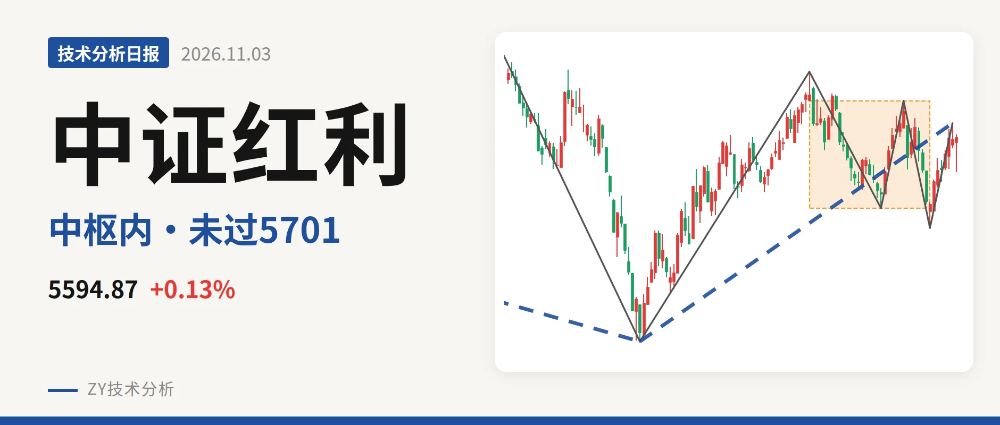
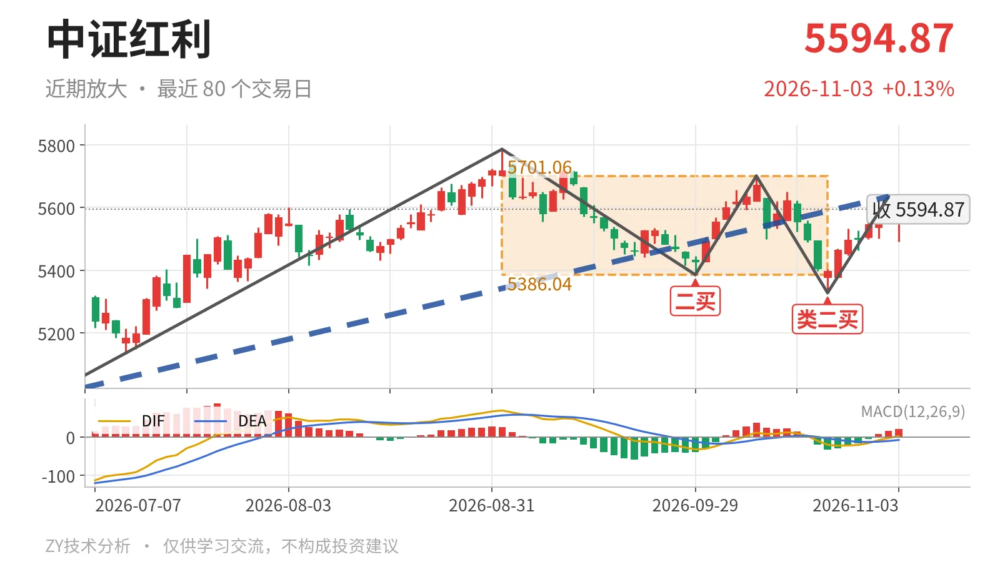

中证红利｜反弹未过5701点，中枢内震荡

最近日线中枢 5386.04—5701.06点，收盘位于中枢之内
一句话：最新价仍位于9月1日至10月23日中枢内，反弹未突破5701点
📉 走势结构：日线反抽未改下跌线段
日线级别仍处在前段下跌线段的反抽结构中，不是单边上涨。2025年7月23日至2026年6月30日的下跌线段从5702.03点至4995.49点，仍未被后续上涨线段破坏；6月30日至11月2日的上涨线段从4995.49点至5635.21点，涨幅12.8%，还在延续。两根日线线段都没有结束，当前更接近下跌线段反抽，而不是已确认的独立上涨段。11月3日单根K线最高5602.76点、最低5491.61点，未能续创6月30日以来反弹新高。

🧭 中枢与位置：收盘位于中枢内偏上
最新收盘5594.87点位于9月1日至10月23日中枢（5386.04—5701.06点）之内，距上沿约106点，距下沿约209点，偏上沿。同时也落在2025年8月4日至2026年4月30日中枢（5518.46—5639.99点）内。最近两个日线笔中枢中轴由5579点附近下移至5544点附近，中枢没有上移，属于重叠震荡。
🔍 买卖点：类二买后未脱离中枢
10月23日类二买5328.30点之后，价格只反弹到5635.21点，没有越过9月1日至10月23日中枢上沿5701.06点，因此该买点仍只是中枢内的日线笔买点。9月29日二买5386.04点与10月23日类二买5328.30点一个比一个低，但都高于6月30日一买4995.49点。线段级别自2023年10月23日二买4894.86点后，尚无新的线段买卖点，更大级别还没有给出新的转折结构。

📊 背驰：下跌笔新低不新弱
比较9月1日至9月29日下跌笔与10月14日至10月23日下跌笔，后者是“新低不新弱”。前者绿柱面积561，DIF低点-32.7；后者低点5328.30点低于5386.04点，但绿柱面积只有53，DIF低点-20.4高于-32.7。价格创了新低，力度没有同步放大，这是10月23日类二买出现的结构基础。之后10月23日至11月2日上涨笔红柱面积仅23，DIF高点-3.0，最新DIF刚回到2.1、柱20.3，反弹力度尚未打开。
🧩 关键位置观察
结构上，5701点与5386点是最近日线笔中枢的上下边界。若反抽能重新站上5701点附近，并出现不弱的日线红柱面积，10月14日以来的回落更可能只是中枢扩展，反弹还有望向5786点附近延续。若反抽不能站上5701点，价格仍在中枢内震荡，暂时没有向上突破。若回落跌破5386点且回抽不回该点上方，结构上构成针对9月1日至10月23日中枢的日线笔三卖，调整压力会明显加大。整体结构中性，中枢内偏上但未形成突破。
⚠️ 本文为基于公开行情数据的缠论技术结构记录，由程序自动计算并生成，仅供学习交流，不构成任何投资建议。市场有风险，投资需谨慎。